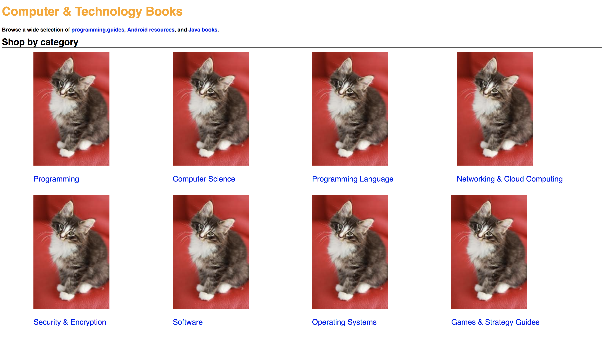
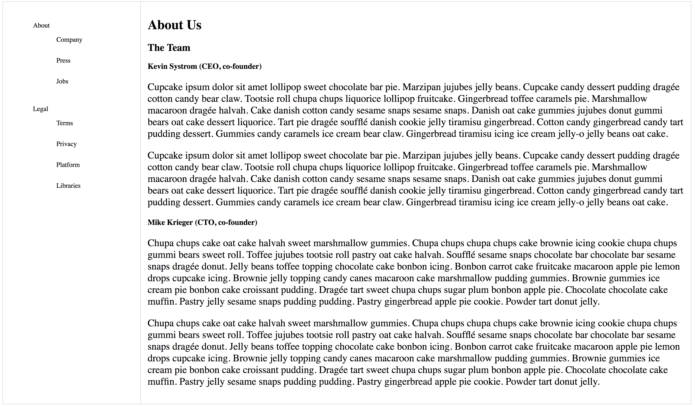

These were just a few projects that I'm proud of so far and remade during class. Our job was to try to recreate a portion of a website.
In this project, we had to recreate a portion of the Amazon website. So we had eight items to work with and have separate links for, followed by some headings.
In this project, we had to recreate the About page for Instagram. I mainly focused on getting the overall setup of the page rather than the links just to see if I was capable of doing so.
 